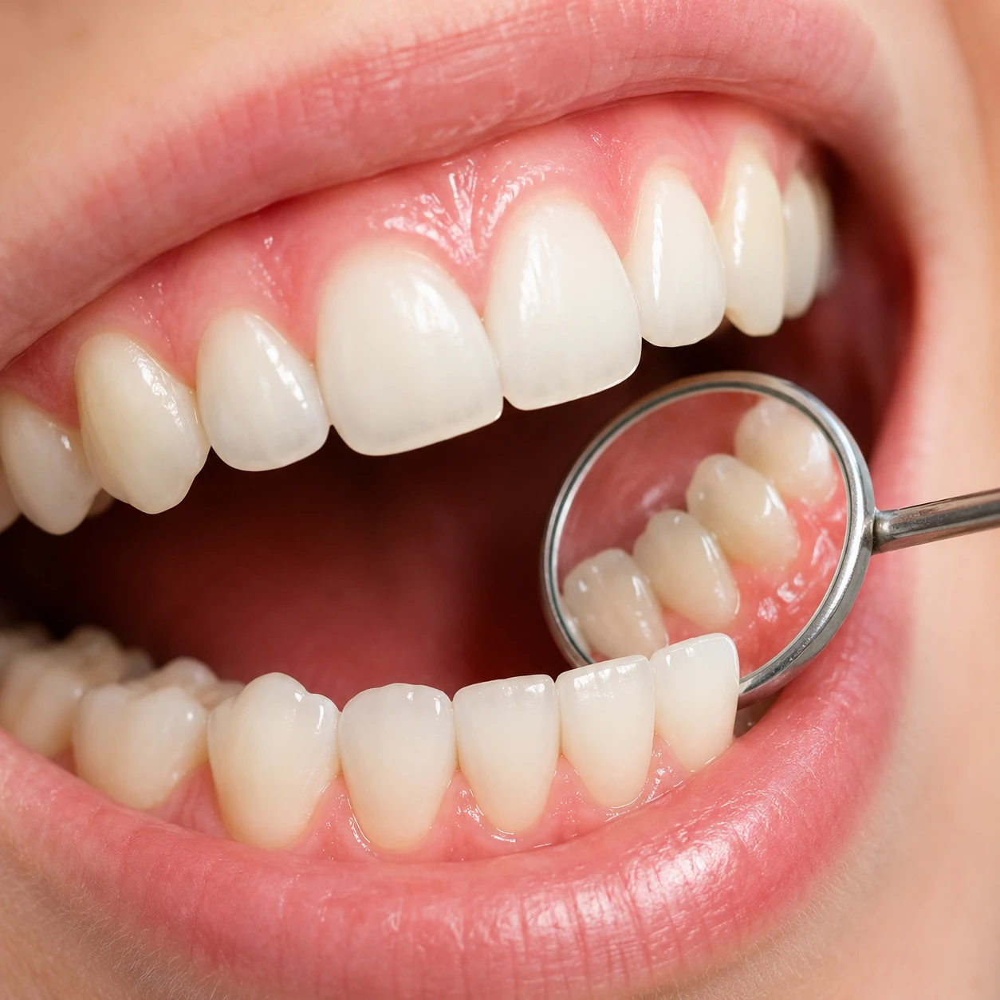

La Dra. Estefanía Illán Hidalgo, especialista en periodoncia, trata las enfermedades de las encías en todas sus fases, desde la prevención hasta los casos más avanzados. Diagnóstico, tratamiento y mantenimiento periodontal en Madrid y Talavera.
La enfermedad periodontal (gingivitis y periodontitis) afecta a las encías y al hueso que sostiene los dientes. Es la principal causa de pérdida dental en adultos y tiene relación con enfermedades como la diabetes o las cardiovasculares.
En Dental Carriches realizamos diagnóstico periodontal completo, tartrectomía, raspado y alisado radicular, cirugía periodontal cuando es necesaria y programas de mantenimiento periódico.

Sondaje completo y radiografías para evaluar el estado del hueso y las encías.
Limpieza profesional e instrucciones personalizadas de higiene oral.
Curetaje subgingival para eliminar sarro y bacterias bajo las encías.
Revisiones cada 3–6 meses para controlar la enfermedad y prevenir recaídas.
Encías que sangran, retraídas, dientes que se mueven o mal aliento persistente son señales de alerta.
No se cura pero sí se controla. Con tratamiento y mantenimiento la enfermedad se estabiliza.
Se hace con anestesia local. Puede haber sensibilidad los días siguientes.
Cada 3–4 meses en fase activa, cada 6 meses una vez estabilizada.
Sí. La diabetes dificulta el control de la infección periodontal y viceversa.
Sin compromiso · Primera consulta de valoración